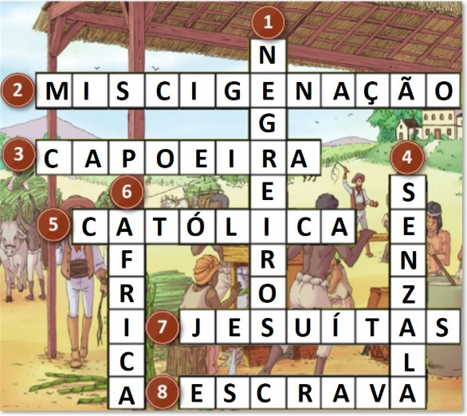

<!DOCTYPE html>
<html lang="pt">
<head>
    <meta charset="UTF-8" />
    <meta name="viewport" content="width=device-width, initial-scale=1.0" />
    <title>Explorador do Império Português</title>
    <script src="https://cdn.tailwindcss.com"></script>
    <link rel="preconnect" href="https://fonts.googleapis.com">
    <link rel="preconnect" href="https://fonts.gstatic.com" crossorigin>
    <link href="https://fonts.googleapis.com/css2?family=Merriweather:wght@400;700&family=Roboto+Slab:wght@400;700&display=swap" rel="stylesheet">
    <script src="https://unpkg.com/@babel/standalone/babel.min.js"></script>
    <script>
      tailwind.config = {
        theme: {
          extend: {
            fontFamily: {
              'serif': ['Merriweather', 'serif'],
              'slab': ['Roboto Slab', 'serif'],
            },
            colors: {
              'navy': '#0a192f',
              'light-navy': '#112240',
              'lightest-navy': '#233554',
              'slate': '#8892b0',
              'light-slate': '#a8b2d1',
              'lightest-slate': '#ccd6f6',
              'brand-gold': '#d4af37',
              'brand-beige': '#f5f5dc',
            }
          }
        }
      }
    </script>
    <style>
        @keyframes fade-in {
            from { opacity: 0; transform: translateY(10px); }
            to { opacity: 1; transform: translateY(0); }
        }
        .animate-fade-in {
            animation: fade-in 0.5s ease-out forwards;
        }
        @media print {
            body * {
                visibility: hidden;
            }
            #certificate-section, #certificate-section * {
                visibility: visible;
            }
            #certificate-section {
                position: absolute;
                left: 0;
                top: 0;
                width: 100%;
                height: 100%;
                display: flex;
                align-items: center;
                justify-content: center;
            }
            .no-print {
                display: none !important;
            }
        }
    </style>
    <script type="importmap">
    {
      "imports": {
        "react": "https://esm.sh/react@18.2.0",
        "react-dom/client": "https://esm.sh/react-dom@18.2.0/client"
      }
    }
    </script>
</head>
<body class="bg-navy text-light-slate">
    <div id="root"></div>
    <script type="text/babel" data-type="module">
        import React, { useState, useEffect, useCallback, StrictMode } from 'react';
        import ReactDOM from 'react-dom/client';

        // --- TYPES ---
        const AppPhase = {
          INTRO: 'INTRO',
          LEARNING: 'LEARNING',
          TIMELINE: 'TIMELINE',
          FORMATIVE_ACTIVITIES: 'FORMATIVE_ACTIVITIES',
          QUIZ: 'QUIZ',
          CONCLUSION: 'CONCLUSION',
        };

        // --- CONSTANTS ---
        const PAGES_CONTENT = [
          {
            title: "Império Português no séc. XVI",
            imageSrc: './image1.jpg',
            paragraphs: [
              "Portugal descobriu e conquistou um grande império colonial ao longo de vários séculos.",
              "No século XVI, Portugal dominava um vasto império. Para além dos territórios europeus, Portugal possuía territórios na América, em África e na Ásia.",
              "Durante o domínio espanhol do Império Português, entre 1580 e 1640, Portugal perdeu territórios. As nações inimigas de Espanha, como a Holanda, a Inglaterra e a França, ocuparam espaços coloniais portugueses. A Ásia foi a região mais afetada, uma vez que aqueles países e os muçulmanos se apoderaram do comércio dos produtos orientais: especiarias, perfumes, sedas, tapetes e porcelanas. Desta forma, os portugueses viraram as suas atenções para o Brasil."
            ]
          },
          {
            title: "O Império Português no século XVIII",
            imageSrc: './image2.jpg',
            paragraphs: [
                "Territórios:",
                "Europa - Portugal Continental e os arquipélagos da Madeira e Açores",
                "África - Angola, Guiné, Moçambique, Cabo Verde e São Tomé e Príncipe",
                "América - Brasil",
                "Ásia - Goa, Damão, Diu, Timor e Macau",
                "Durante o século XVII, Portugal perdeu alguns territórios do seu império, porque esteve sob o domínio Castelhano durante sessenta anos. Durante esse domínio, dinastia Filipina, os países inimigos de Castela (Inglaterra, a Holanda e a França) ocuparam muitos dos nossos territórios. No século XVIII, a dimensão do Império Português apresentava, por essa razão, uma extensão mais pequena. No entanto, houve um território que ganhou dimensão, foi o Brasil. No Oriente, os portugueses tiveram de enfrentar algumas dificuldades, nomeadamente os ataques dos piratas e corsários, bem como a afirmação de outros países. Os lucros daquela região do império eram cada vez menores e, por essa razão, procurou-se explorar e colonizar o Brasil."
            ]
          },
          {
            title: "A importância do Brasil na economia do reino",
            imageSrc: './image3.jpg',
            paragraphs: [
              "As colónias asiáticas perderam bastante relevância durante este período, devido principalmente ao final do monopólio que Portugal detinha sobre o comércio de especiarias. Apesar de aqui continuar a obter especiarias e artigos de luxo, a economia do reino passou a assentar na produção de açúcar, oriundo do Brasil.",
              "Apesar de não serem os principais territórios coloniais portugueses, os territórios africanos continuaram a ser bastante importantes dado serem a origem do marfim, da malagueta e de escravos. Estes últimos foram fundamentais para a atividade produtiva do Brasil, que se afirmou como a mais relevante neste período.",
              "Com o fim do monopólio sobre as especiarias orientais, o Brasil assumiu uma maior importância e centralidade. A facilidade de produção de açúcar foi fundamental para o aumento da importância do Brasil, que se tornaria fundamental para a economia do reino."
            ]
          },
          {
            title: "O império colonial no Brasil",
            imageSrc: './image4.jpg',
            paragraphs: [
              "A principal produção agrícola do Brasil, no séc. XVIII, era a cana-de-açúcar. A mão-de-obra usada nas plantações era constituída por escravos. O açúcar, o ouro e os diamantes foram os produtos mais importantes explorados no Brasil. O açúcar como era um produto raro, era muito caro.",
              "Os bandeirantes e a exploração económica e territorial do Brasil: Ao longo do século XVIII, fizeram-se expedições de exploração ao interior do Brasil, denominadas de 'Bandeiras'. Os exploradores ou bandeirantes acabaram por encontrar minas de ouro, de diamantes e de outras pedras preciosas, nas regiões de Goiás, Minas Gerais e Mato Grosso.",
              "As plantações de cana-de-açúcar e a exploração mineira fizeram com que o Brasil assumisse uma grande importância na economia portuguesa. Os avultados lucros atraíram colonos portugueses. Contudo, a exploração económica do Brasil fez-se à custa do trabalho árduo e desumano de milhares de escravos africanos."
            ]
          }
        ];
        const TIMELINE_EVENTS = [
            { period: "Séc. XVI", title: "Auge da Expansão", description: "Portugal controla um vasto império com territórios na América, África e Ásia, dominando o comércio de especiarias." },
            { period: "1580-1640", title: "Domínio Espanhol (Dinastia Filipina)", description: "Portugal fica sob o domínio da coroa espanhola, perdendo territórios para nações inimigas de Espanha como Holanda e Inglaterra." },
            { period: "Séc. XVII", title: "Reorientação para o Brasil", description: "Com a perda do monopólio asiático, Portugal começa a focar-se mais intensamente na exploração e colonização do Brasil." },
            { period: "Séc. XVIII", title: "Ciclo do Ouro e Açúcar", description: "O Brasil torna-se o centro económico do império, com a produção de açúcar e a descoberta de ouro e diamantes pelos bandeirantes." }
        ];
        const STATIC_QUIZ_QUESTIONS = [
            { question: "O que levou Portugal a focar as suas atenções no Brasil durante o período do domínio espanhol (1580-1640)?", options: ["A descoberta de ouro em Minas Gerais.","A perda do monopólio do comércio de produtos orientais para outras nações.","Um tratado de paz assinado com a Holanda.","O esgotamento das minas de África."], correctAnswerIndex: 1, explanation: "Durante o domínio espanhol, nações inimigas como Holanda e Inglaterra apoderaram-se do comércio de especiarias na Ásia, forçando Portugal a procurar novas fontes de riqueza no Brasil." },
            { question: "Qual território ganhou uma dimensão e importância significativamente maior para o Império Português no século XVIII?", options: ["Goa, na Índia.","Angola, em África.","O Brasil.","Macau, na China."], correctAnswerIndex: 2, explanation: "Enquanto a influência na Ásia diminuía, o Brasil cresceu em importância devido à exploração de seus vastos recursos, tornando-se o centro económico do império." },
            { question: "Qual produto, oriundo do Brasil, tornou-se fundamental para a economia do reino português após o fim do monopólio das especiarias?", options: ["O café.","O tabaco.","O açúcar.","O cacau."], correctAnswerIndex: 2, explanation: "O texto destaca que 'a economia do reino passou a assentar na produção de açúcar, oriundo do Brasil', devido à facilidade de produção e alta procura." },
            { question: "Qual era a principal contribuição dos territórios africanos para a atividade produtiva do Brasil colonial?", options: ["Fornecimento de ouro e diamantes.","Exportação de especiarias raras.","Fornecimento de marfim, malagueta e mão-de-obra escravizada.","Troca de produtos manufaturados europeus."], correctAnswerIndex: 2, explanation: "Os territórios africanos foram a origem de escravos, que eram 'fundamentais para a atividade produtiva do Brasil', como mão-de-obra nas plantações e minas." },
            { question: "Quem foram os 'bandeirantes' e qual foi o seu principal contributo para o Brasil colonial no século XVIII?", options: ["Missionários que catequizaram os indígenas no interior.","Exploradores que encontraram minas de ouro e diamantes e expandiram as fronteiras.","Comerciantes que controlavam o tráfico de escravos no Atlântico.","Soldados que defendiam a costa de ataques de piratas."], correctAnswerIndex: 1, explanation: "Os bandeirantes organizaram expedições ('Bandeiras') para o interior, descobrindo metais preciosos em Goiás, Minas Gerais e Mato Grosso, e alargando o território brasileiro." },
            { question: "Durante o século XVI, o Império Português possuía territórios em quais continentes?", options: ["Apenas Europa e África.","Apenas Europa e América.","Europa, América, África e Ásia.","Apenas Ásia e África."], correctAnswerIndex: 2, explanation: "O texto afirma claramente que no século XVI, 'Para além dos territórios europeus, Portugal possuía territórios na América, em África e na Ásia.'" },
            { question: "Além do açúcar, que outros produtos foram muito importantes e explorados no Brasil no século XVIII?", options: ["Sedas e porcelanas.","Ouro e diamantes.","Tapetes e perfumes.","Marfim e malagueta."], correctAnswerIndex: 1, explanation: "O texto menciona que 'O açúcar, o ouro e os diamantes foram os produtos mais importantes explorados no Brasil' durante esse período." },
            { question: "O período entre 1580 e 1640 é conhecido na história de Portugal como:", options: ["O Ciclo do Ouro.","A Era dos Descobrimentos.","O Auge da Expansão.","O Domínio Espanhol (Dinastia Filipina)."], correctAnswerIndex: 3, explanation: "A linha do tempo identifica claramente este período como 'Domínio Espanhol (Dinastia Filipina)', durante o qual Portugal esteve sob a coroa espanhola." },
            { question: "No século XVIII, quais foram os principais desafios que os portugueses enfrentaram no Oriente?", options: ["Desastres naturais que destruíram as feitorias.","Ataques de piratas e a concorrência de outros países europeus.","A falta de interesse dos europeus nos produtos orientais.","Epidemias que dizimaram a população local."], correctAnswerIndex: 1, explanation: "O texto menciona que os portugueses tiveram de enfrentar 'os ataques dos piratas e corsários, bem como a afirmação de outros países', o que diminuiu os lucros na região." },
            { question: "Qual era a principal fonte de mão-de-obra nas plantações de cana-de-açúcar no Brasil colonial?", options: ["Trabalhadores assalariados vindos de Portugal.","Colonos europeus de outras nações.","Populações indígenas locais.","Escravos africanos."], correctAnswerIndex: 3, explanation: "O texto afirma que 'A mão-de-obra usada nas plantações era constituída por escravos' e que a exploração económica se fez à custa do trabalho de 'milhares de escravos africanos'." }
        ];

        // --- COMPONENTS ---

        const Intro = ({ onStart }) => (
          <div className="bg-light-navy p-8 rounded-lg shadow-2xl text-center flex flex-col items-center animate-fade-in">
            <h1 className="text-4xl sm:text-5xl font-bold font-slab text-brand-gold mb-4">Explorador do Império Português</h1>
            <p className="text-lg text-lightest-slate max-w-2xl mx-auto mb-8">Embarque numa viagem interativa para descobrir a ascensão e transformação do Império Português, desde as suas vastas conquistas no século XVI até o papel central do Brasil.</p>
            <button onClick={onStart} className="bg-brand-gold text-navy font-bold font-slab py-3 px-8 rounded-lg text-xl hover:bg-yellow-400 transition-transform transform hover:scale-105">Iniciar a Viagem</button>
          </div>
        );

        const ContentPage = ({ content, onImageClick }) => (
          <div className="bg-light-navy p-6 sm:p-8 rounded-lg shadow-xl animate-fade-in">
            <h2 className="text-3xl font-bold font-slab text-brand-gold mb-6 text-center">{content.title}</h2>
            <div className="flex flex-col md:flex-row gap-6 items-center">
              <div className="md:w-1/2">
                   onImageClick(content.imageSrc)} />
              </div>
              <div className="md:w-1/2 space-y-4 text-lightest-slate text-lg">
                {content.paragraphs.map((p, index) => <p key={index}>{p}</p>)}
              </div>
            </div>
          </div>
        );

        const LearningFlow = ({ pages, onComplete, onImageClick }) => {
          const [currentPageIndex, setCurrentPageIndex] = useState(0);
          const goToNextPage = () => (currentPageIndex < pages.length - 1) ? setCurrentPageIndex(currentPageIndex + 1) : onComplete();
          const goToPreviousPage = () => (currentPageIndex > 0) && setCurrentPageIndex(currentPageIndex - 1);
          const isLastPage = currentPageIndex === pages.length - 1;

          return (
            <div className="flex flex-col">
              <ContentPage content={pages[currentPageIndex]} onImageClick={onImageClick} />
              <div className="flex justify-between items-center mt-8">
                <button onClick={goToPreviousPage} disabled={currentPageIndex === 0} className="bg-slate text-white font-bold py-2 px-6 rounded-lg hover:bg-light-slate transition disabled:opacity-50 disabled:cursor-not-allowed">Anterior</button>
                <div className="text-lightest-slate">Página {currentPageIndex + 1} de {pages.length}</div>
                <button onClick={goToNextPage} className="bg-brand-gold text-navy font-bold py-2 px-6 rounded-lg hover:bg-yellow-400 transition">{isLastPage ? 'Ver Linha do Tempo' : 'Próximo'}</button>
              </div>
            </div>
          );
        };

        const Timeline = ({ events, onComplete }) => (
          <div className="bg-light-navy p-8 rounded-lg shadow-2xl animate-fade-in">
            <h2 className="text-4xl font-bold font-slab text-brand-gold mb-8 text-center">Linha do Tempo Histórica</h2>
            <div className="relative border-l-4 border-brand-gold/50 ml-6">
              {events.map((event, index) => (
                <div key={index} className="mb-10 ml-8 relative">
                  <div className="absolute -left-10 mt-1.5 w-6 h-6 bg-brand-gold rounded-full border-4 border-navy"></div>
                  <time className="mb-1 text-lg font-semibold text-brand-gold">{event.period}</time>
                  <h3 className="text-2xl font-slab font-semibold text-lightest-slate">{event.title}</h3>
                  <p className="text-base font-normal text-light-slate">{event.description}</p>
                </div>
              ))}
            </div>
            <div className="text-center mt-8">
              <button onClick={onComplete} className="bg-brand-gold text-navy font-bold font-slab py-3 px-8 rounded-lg text-xl hover:bg-yellow-400 transition-transform transform hover:scale-105">Iniciar Atividades</button>
            </div>
          </div>
        );

        // --- FORMATIVE ACTIVITIES COMPONENTS ---
        const ProductAssociation = () => {
          const products = React.useMemo(() => [
            { name: "Açúcar", correct: "Brasil" }, { name: "Ouro", correct: "Brasil" },
            { name: "Diamantes", correct: "Brasil" }, { name: "Especiarias", correct: "Ásia" },
            { name: "Sedas", correct: "Ásia" }, { name: "Tapetes", correct: "Ásia" },
            { name: "Porcelanas", correct: "Ásia" }, { name: "Marfim", correct: "África" },
            { name: "Escravos", correct: "África" }, { name: "Malaguetas", correct: "África" },
          ], []);
          const regions = ["Brasil", "Ásia", "África"];
          const [selections, setSelections] = useState({});
          const [results, setResults] = useState({});

          const handleSelect = (productName, region) => {
            setSelections(prev => ({ ...prev, [productName]: region }));
            setResults(prev => ({...prev, [productName]: null}));
          };

          const checkAnswers = () => {
            const newResults = {};
            products.forEach(p => {
                newResults[p.name] = selections[p.name] === p.correct;
            });
            setResults(newResults);
          };

          return (
            <div className="bg-navy p-6 rounded-lg">
                <h3 className="text-2xl font-slab font-semibold text-lightest-slate mb-4">1. Associa os Produtos à sua Região</h3>
                <p className="text-light-slate mb-6">Identifica a principal região de origem de cada produto no império português.</p>
                <div className="overflow-x-auto">
                    <table className="w-full text-left">
                        <thead>
                            <tr className="border-b border-slate">
                                <th className="p-2">Produto</th>
                                {regions.map(r => <th key={r} className="p-2 text-center">{r}</th>)}
                            </tr>
                        </thead>
                        <tbody>
                            {products.map(p => (
                                <tr key={p.name} className="border-b border-lightest-navy">
                                    <td className="p-2 font-semibold">{p.name}</td>
                                    {regions.map(r => (
                                        <td key={r} className="p-2 text-center">
                                            <button onClick={() => handleSelect(p.name, r)} className={`w-8 h-8 rounded-full transition-colors ${selections[p.name] === r ? 'bg-brand-gold' : 'bg-slate/30 hover:bg-slate/50'} 
                                            ${results[p.name] === true && selections[p.name] === r ? '!bg-green-500' : ''} 
                                            ${results[p.name] === false && selections[p.name] === r ? '!bg-red-500' : ''}`}></button>
                                        </td>
                                    ))}
                                </tr>
                            ))}
                        </tbody>
                    </table>
                </div>
                <div className="text-center mt-6">
                    <button onClick={checkAnswers} className="bg-slate text-white font-bold py-2 px-6 rounded-lg hover:bg-light-slate">Verificar Respostas</button>
                </div>
            </div>
          );
        };
        
        const TrueOrFalse = () => {
          const statements = React.useMemo(() => [
            { text: "O rei foi quem mais beneficiou das riquezas do Brasil.", correct: false },
            { text: "A extração do ouro originava contrabando.", correct: true },
            { text: "As maiores quantidades de ouro do Brasil chegaram na primeira metade do séc. XVIII.", correct: true },
            { text: "Os bandeirantes eram grupos de aventureiros que avançaram para o interior de África.", correct: false },
            { text: "O objetivo dos bandeirantes era encontrar pedras preciosas e ouro.", correct: true },
            { text: "De todo o ouro explorado no Brasil, o rei recebia um quinto (a quintalada).", correct: true },
          ], []);
          const [answers, setAnswers] = useState({});

          const handleAnswer = (index, answer) => {
             setAnswers(prev => ({...prev, [index]: { selected: answer, isCorrect: statements[index].correct === answer }}));
          };
          
          const getButtonClass = (index, value) => {
              if(!answers[index]) return 'bg-slate/30 hover:bg-slate/50';
              if(answers[index].selected !== value) return 'bg-slate/30 opacity-50';
              return answers[index].isCorrect ? 'bg-green-500' : 'bg-red-500';
          };

          return (
            <div className="bg-navy p-6 rounded-lg">
                <h3 className="text-2xl font-slab font-semibold text-lightest-slate mb-4">2. Verdadeiro ou Falso</h3>
                <p className="text-light-slate mb-6">Avalia cada uma das seguintes afirmações.</p>
                <div className="space-y-4">
                    {statements.map((s, index) => (
                        <div key={index} className="bg-lightest-navy p-4 rounded-lg flex flex-col md:flex-row justify-between items-center gap-4">
                            <p className="flex-1 text-lightest-slate">{s.text}</p>
                            <div className="flex-shrink-0 flex gap-2">
                                <button onClick={() => handleAnswer(index, true)} disabled={answers[index]} className={`font-bold py-2 px-4 rounded transition-colors ${getButtonClass(index, true)}`}>V</button>
                                <button onClick={() => handleAnswer(index, false)} disabled={answers[index]} className={`font-bold py-2 px-4 rounded transition-colors ${getButtonClass(index, false)}`}>F</button>
                            </div>
                        </div>
                    ))}
                </div>
            </div>
          );
        };

        const Crossword = () => {
            const definitions = React.useMemo(() => [
                { id: 1, text: "Navios em que eram transportados os escravos trazidos de África" },
                { id: 2, text: "Mistura de povos diferentes" },
                { id: 3, text: "Dança de origem africana que faz agora parte da cultura brasileira" },
                { id: 4, text: "Local onde dormiam os escravos" }, // Assumindo Senzala (S) para 4
                { id: 5, text: "Religião levada pelos portugueses para o Brasil" },
                { id: 6, text: "Continente de onde eram trazidos os escravos" }, // Assumindo África (F) para 6
                { id: 7, text: "Missionários da Companhia de Jesus" },
                { id: 8, text: "Tipo de mão de obra utilizada nos engenhos e nas minas" }
            ], []);

            const [shuffledDefs, setShuffledDefs] = useState([]);
            const [userAnswers, setUserAnswers] = useState({});
            const [results, setResults] = useState({});
            const [isVerified, setIsVerified] = useState(false);

            useEffect(() => {
                setShuffledDefs(definitions.sort(() => Math.random() - 0.5));
                const initialAnswers = {};
                definitions.forEach((_, index) => {
                    initialAnswers[index] = '';
                });
                setUserAnswers(initialAnswers);
            }, [definitions]);

            const handleInputChange = (index, value) => {
                const newAnswers = { ...userAnswers, [index]: value };
                setUserAnswers(newAnswers);
                setIsVerified(false);
                setResults({});
            };
            
            const checkAnswers = () => {
                const newResults = {};
                shuffledDefs.forEach((def, index) => {
                    newResults[index] = userAnswers[index] === String(def.id);
                });
                setResults(newResults);
                setIsVerified(true);
            };

            const getInputClass = (index) => {
                if (!isVerified) return 'border-slate focus:border-brand-gold';
                return results[index] ? 'border-green-500 bg-green-900/50' : 'border-red-500 bg-red-900/50';
            };

            return (
                <div className="bg-navy p-6 rounded-lg">
                    <h3 className="text-2xl font-slab font-semibold text-lightest-slate mb-4">3. Palavras Cruzadas Interativas</h3>
                    <p className="text-light-slate mb-6">Associa cada definição ao número correspondente na imagem. Insere o número no campo ao lado de cada definição.</p>
                    <div className="flex flex-col md:flex-row gap-8">
                        <div className="md:w-1/2">
                            
                        </div>
                        <div className="md:w-1/2 space-y-4">
                            {shuffledDefs.map((def, index) => (
                                <div key={def.id} className="flex items-center gap-3">
                                    <input
                                        type="number"
                                        min="1"
                                        max="8"
                                        value={userAnswers[index] || ''}
                                        onChange={(e) => handleInputChange(index, e.target.value)}
                                        className={`w-16 h-10 text-center bg-lightest-navy text-white p-2 rounded-lg border-2 focus:outline-none transition-colors ${getInputClass(index)}`}
                                    />
                                    <label className="text-lightest-slate">{def.text}</label>
                                </div>
                            ))}
                             <div className="pt-4">
                                <button onClick={checkAnswers} className="bg-slate text-white font-bold py-2 px-6 rounded-lg hover:bg-light-slate">Verificar Respostas</button>
                            </div>
                        </div>
                    </div>
                </div>
            );
        };

        const FormativeActivities = ({ onComplete }) => {
            return (
                <div className="bg-light-navy p-6 sm:p-8 rounded-lg shadow-2xl animate-fade-in">
                    <h2 className="text-4xl font-bold font-slab text-brand-gold mb-8 text-center">Atividades Formativas</h2>
                    
                    <ProductAssociation />
                    <div className="w-full border-t-2 border-brand-gold/20 my-8"></div>
                    <TrueOrFalse />
                    <div className="w-full border-t-2 border-brand-gold/20 my-8"></div>
                    <Crossword />

                    <div className="text-center mt-12">
                        <button onClick={onComplete} className="bg-brand-gold text-navy font-bold font-slab py-3 px-8 rounded-lg text-xl hover:bg-yellow-400 transition-transform transform hover:scale-105">
                            Ir para o Quiz Final
                        </button>
                    </div>
                </div>
            );
        };


        const Quiz = ({ onQuizComplete }) => {
          const [questions] = useState(STATIC_QUIZ_QUESTIONS);
          const [currentQuestionIndex, setCurrentQuestionIndex] = useState(0);
          const [selectedAnswerIndex, setSelectedAnswerIndex] = useState(null);
          const [isAnswered, setIsAnswered] = useState(false);
          const [score, setScore] = useState(0);

          const handleAnswerSubmit = () => {
            if (selectedAnswerIndex === null) return;
            setIsAnswered(true);
            if (selectedAnswerIndex === questions[currentQuestionIndex].correctAnswerIndex) {
              setScore(score + 1);
            }
          };

          const handleNextQuestion = () => {
            if (currentQuestionIndex < questions.length - 1) {
              setCurrentQuestionIndex(currentQuestionIndex + 1);
              setSelectedAnswerIndex(null);
              setIsAnswered(false);
            } else {
              onQuizComplete(score, questions.length);
            }
          };

          const currentQuestion = questions[currentQuestionIndex];
          const isLastQuestion = currentQuestionIndex === questions.length - 1;
          const getButtonClass = (index) => {
            if (!isAnswered) return selectedAnswerIndex === index ? 'bg-brand-gold/70' : 'bg-lightest-navy hover:bg-slate/50';
            if (index === currentQuestion.correctAnswerIndex) return 'bg-green-600';
            if (index === selectedAnswerIndex) return 'bg-red-600';
            return 'bg-lightest-navy opacity-60';
          };

          return (
            <div className="bg-light-navy p-8 rounded-lg shadow-2xl animate-fade-in">
              <h2 className="text-2xl font-slab text-brand-gold mb-2">Quiz Final - Pergunta {currentQuestionIndex + 1}/{questions.length}</h2>
              <p className="text-xl text-lightest-slate mb-6">{currentQuestion.question}</p>
              <div className="space-y-3">{currentQuestion.options.map((option, index) => <button key={index} onClick={() => !isAnswered && setSelectedAnswerIndex(index)} disabled={isAnswered} className={`w-full text-left p-4 rounded-lg transition text-white ${getButtonClass(index)}`}>{option}</button>)}</div>
              {isAnswered && <div className="mt-6 p-4 bg-navy rounded-lg animate-fade-in"><p className="text-lightest-slate">{currentQuestion.explanation}</p></div>}
              <div className="mt-8 text-right">
                {isAnswered ? <button onClick={handleNextQuestion} className="bg-brand-gold text-navy font-bold py-2 px-6 rounded-lg hover:bg-yellow-400">{isLastQuestion ? 'Ver Resultados' : 'Próxima Pergunta'}</button> : <button onClick={handleAnswerSubmit} disabled={selectedAnswerIndex === null} className="bg-slate text-white font-bold py-2 px-6 rounded-lg hover:bg-light-slate transition disabled:opacity-50 disabled:cursor-not-allowed">Responder</button>}
              </div>
            </div>
          );
        };
        
        const Conclusion = ({ score, totalQuestions, onRestart }) => {
            const [userName, setUserName] = useState('');
            const [certificateGenerated, setCertificateGenerated] = useState(false);
            const percentage = totalQuestions > 0 ? Math.round((score / totalQuestions) * 100) : 0;
            const incorrectAnswers = totalQuestions - score;
            const getClassification = () => {
                if (percentage >= 90) return "Muito Bom";
                if (percentage >= 75) return "Bom";
                if (percentage >= 50) return "Satisfaz";
                return "Não Satisfaz";
            };
            const handleGenerateCertificate = (e) => { e.preventDefault(); if (userName.trim()) { setCertificateGenerated(true); } };
            if (!certificateGenerated) {
                return (
                    <div className="bg-light-navy p-8 rounded-lg shadow-2xl text-center flex flex-col items-center animate-fade-in">
                        <h2 className="text-4xl sm:text-5xl font-bold font-slab text-brand-gold mb-4">Quiz Concluído!</h2>
                        <p className="text-2xl text-lightest-slate mb-6">A sua pontuação final foi {score} em {totalQuestions}.</p>
                        <form onSubmit={handleGenerateCertificate} className="w-full max-w-sm">
                            <label htmlFor="userName" className="block text-lightest-slate text-lg mb-2">Insira o seu nome para gerar o certificado:</label>
                            <input type="text" id="userName" value={userName} onChange={(e) => setUserName(e.target.value)} className="w-full bg-lightest-navy text-white p-3 rounded-lg border-2 border-slate focus:border-brand-gold focus:outline-none" placeholder="O seu nome completo" required />
                            <button type="submit" className="mt-6 bg-brand-gold text-navy font-bold font-slab py-3 px-8 rounded-lg text-xl hover:bg-yellow-400 transition-transform transform hover:scale-105">Gerar Certificado</button>
                        </form>
                    </div>
                );
            }
            return (
                <div id="certificate-section" className="w-full animate-fade-in">
                    <div className="bg-brand-beige text-navy p-8 rounded-lg shadow-2xl flex flex-col items-center border-8 border-brand-gold relative">
                        <h2 className="text-4xl sm:text-5xl font-bold font-slab text-navy mb-2">Certificado de Conclusão</h2>
                        <p className="text-lg">Este certificado é atribuído a</p>
                        <p className="text-3xl font-bold font-serif my-4">{userName}</p>
                        <p className="text-lg">pela sua participação no quiz sobre o</p>
                        <p className="text-2xl font-semibold font-slab mb-6">Império Português</p>
                        <div className="w-full border-t-2 border-brand-gold/50 my-4"></div>
                        <h3 className="text-2xl font-bold font-slab mb-4">Relatório de Desempenho</h3>
                        <div className="grid grid-cols-2 gap-x-8 gap-y-4 text-lg text-left">
                            <span className="font-semibold">Respostas Corretas:</span><span className="font-bold">{score}</span>
                            <span className="font-semibold">Respostas Incorretas:</span><span className="font-bold">{incorrectAnswers}</span>
                            <span className="font-semibold">Percentagem Final:</span><span className="font-bold">{percentage}%</span>
                            <span className="font-semibold">Classificação:</span><span className="font-bold">{getClassification()}</span>
                        </div>
                        <div className="w-full border-t-2 border-brand-gold/50 my-4"></div>
                        <p className="text-sm mt-4">Emitido em: {new Date().toLocaleDateString('pt-PT')}</p>
                        <div className="no-print mt-8 flex gap-4">
                            <button onClick={() => window.print()} className="bg-slate text-white font-bold py-2 px-6 rounded-lg hover:bg-light-slate">Imprimir</button>
                            <button onClick={onRestart} className="bg-brand-gold text-navy font-bold py-2 px-6 rounded-lg hover:bg-yellow-400">Recomeçar</button>
                        </div>
                    </div>
                </div>
            );
        };
        
        const ImageModal = ({ src, onClose }) => {
            if (!src) return null;
            return (
                <div className="fixed inset-0 bg-black bg-opacity-80 flex items-center justify-center z-50 animate-fade-in" onClick={onClose}>
                    <div className="relative p-4">
                        <button onClick={onClose} className="absolute -top-2 -right-2 bg-white text-black rounded-full h-8 w-8 flex items-center justify-center text-xl font-bold z-10">&times;</button>
                         e.stopPropagation()} />
                    </div>
                </div>
            );
        };

        // --- APP ---
        function App() {
          const [phase, setPhase] = useState(AppPhase.INTRO);
          const [quizScore, setQuizScore] = useState(0);
          const [totalQuestions, setTotalQuestions] = useState(0);
          const [zoomedImageSrc, setZoomedImageSrc] = useState(null);

          const handleStart = useCallback(() => setPhase(AppPhase.LEARNING), []);
          const handleLearningComplete = useCallback(() => setPhase(AppPhase.TIMELINE), []);
          const handleTimelineComplete = useCallback(() => setPhase(AppPhase.FORMATIVE_ACTIVITIES), []);
          const handleFormativeComplete = useCallback(() => setPhase(AppPhase.QUIZ), []);
          
          const handleQuizComplete = useCallback((score, questionsCount) => {
            setQuizScore(score);
            setTotalQuestions(questionsCount);
            setPhase(AppPhase.CONCLUSION);
          }, []);
          
          const handleRestart = useCallback(() => {
            setQuizScore(0);
            setTotalQuestions(0);
            setPhase(AppPhase.INTRO);
          }, []);

          const handleImageClick = useCallback((src) => {
            setZoomedImageSrc(src);
          }, []);

          const renderPhase = () => {
            switch (phase) {
              case AppPhase.INTRO: return <Intro onStart={handleStart} />;
              case AppPhase.LEARNING: return <LearningFlow pages={PAGES_CONTENT} onComplete={handleLearningComplete} onImageClick={handleImageClick} />;
              case AppPhase.TIMELINE: return <Timeline events={TIMELINE_EVENTS} onComplete={handleTimelineComplete} />;
              case AppPhase.FORMATIVE_ACTIVITIES: return <FormativeActivities onComplete={handleFormativeComplete} />;
              case AppPhase.QUIZ: return <Quiz onQuizComplete={handleQuizComplete} />;
              case AppPhase.CONCLUSION: return <Conclusion score={quizScore} totalQuestions={totalQuestions} onRestart={handleRestart} />;
              default: return <Intro onStart={handleStart} />;
            }
          };

          return (
            <>
              <div className="min-h-screen bg-navy font-serif flex flex-col items-center justify-center p-4 sm:p-6 lg:p-8">
                <main className="w-full max-w-4xl mx-auto">
                  {renderPhase()}
                </main>
                <footer className="w-full max-w-4xl mx-auto text-center mt-8 text-slate text-sm no-print">
                  <p>&copy; 2024 Explorador do Império Português. Criado com React.</p>
                </footer>
              </div>
              <ImageModal src={zoomedImageSrc} onClose={() => setZoomedImageSrc(null)} />
            </>
          );
        }

        // --- RENDER ---
        const rootElement = document.getElementById('root');
        const root = ReactDOM.createRoot(rootElement);
        root.render(
          <StrictMode>
            <App />
          </StrictMode>
        );
    </script>
</body>
</html>